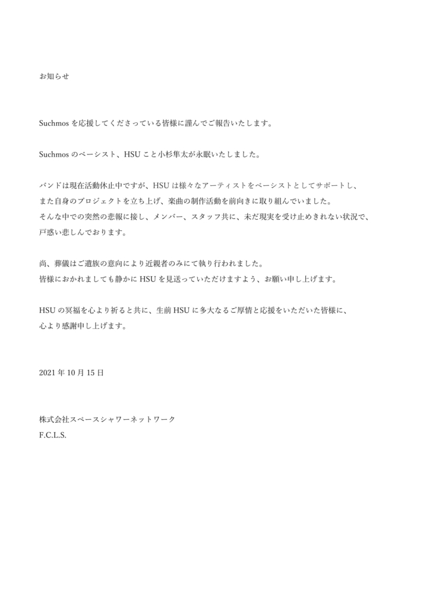

Photo courtesy of SUCHMOS (@SCM_JAPAN)
One of the things for which I can credit my Japanese teacher Irie-sensei is that she indirectly led me to learning the bass guitar. One day, in class, she put on a music video like she always did.
The video opens with a mirrored shot of a city and transitions to a man walking down a hallway. I thought that compared to the other music videos in class, this one would be a rather lackluster one.
I was so, so wrong. The man made his way over to a couch, and then his high notes came in. Then the chorus. There was the entire band playing. Then YONCE, the lead singer and the frontman in the video, grooving to the beat. The song and the entire video seemed to scratch some kind of itch I didn’t even know existed.
“Stay Tune”, the 2017 single by the Japanese rock group Suchmos, quickly became one of my favorite songs. I can’t recall another time in my life where I had a strong urge to repeat a song for six months. Every time it would play in my playlist, I would unlock my phone to look at Spotify and press the Loop button.
Last summer I was curious enough to think about the various instrument parts in the song. I searched for a bass cover of “Stay Tune”. I think I was meaning to find the guitar part. But the cover that I saw kicked off my desire to learn bass. I didn’t really know how to explain it; it was basically just … cool. Within a month I was practicing on my brother’s Squier. Within four months, I was practicing on my own Squier.
I came back to the original video multiple times. The comment section was expansive: Users talked about the timelessness of the six-year-old song, the fact that it had no wasted notes and at the same time was not wanting more, its usage in a Honda commercial, the vibe that it carried — but above all, HSU, the band’s bassist.
Every one in a few comments would mention HSU and express some kind of thankfulness. But they all suggested that his playing would not be in the future of Suchmos. That was when I learned that the band was on hiatus. They had gone their separate ways in order to work on individual projects. I thought that was all. But one day I scrolled through their Wikipedia page, and found something. Something I didn’t think I would be seeing. And I dug two steps deeper. And there it was, a simple plain-text announcement from Suchmos.
Courtesy of SUCHMOS
Announcement
Suchmos has something to report to its supporters.
Suchmos’s bassist, HSU, a.k.a. Hayata Kosugi, has now passed into eternal rest.
The band is currently under hiatus, but HSU has supported many other artists as a bassist, built his own projects up, and has progressively engaged himself in music production. Members and staff alike are struggling to accept this tragic news and are lost in grief.
Please note that HSU’s family has held the funeral with close relatives. We hope that everyone will see HSU off peacefully.
We wish HSU happiness in his next life from the bottom of our hearts, and for everyone who wish have cheered on HSU with great hospitality and kindness,
We thank you from the bottom of our hearts.
15 October 2021
Space Shower Music
F.C.L.S.
I was dumbfounded. Grief-stricken. Despite only knowing the band for four months at the time, HSU had felt like my hero in the bass realm. When I was reading all of those comments praising HSU, little did I know that I was reading tributes instead of regular compliments. My hero had been dead before I started, and I never knew it.
Here at university, a lot of students enjoy going to concerts. They have money and time and tests to worry about, but what does all that matter in the face of seeing their favorite artists? Nothing, of course. Because you want to experience it while they’re there.
I wish I could’ve experienced Suchmos when HSU was here. But they were on hiatus, and HSU had passed, long before I had even heard of the name.
The best I can do is go on YouTube, watch the recordings of their live shows and try to feel like I’m there. To give credit where it’s due, it feels pretty damn good. For a moment you’re part of the crowd at Yokohama Stadium, wrapped up in your raincoat and gazing at the stage.
Oh, it’s “Stay Tune.” HSU’s there on stage. He’s sporting a five-string Fender in a really nice turquoise-blue color. I should get a five-string bass. Maybe in a couple years.
YONCE is doing his swaggy walk as usual. He’s hitting those high notes. At one point, HSU leans forward into his mic and sings along with the verse.
There’s those funky wah-wah sounds of his part in “YMM.” He’s walking across the stage along with his solo in “808.” The crowd is cheering. He’s grinning from ear to ear.
It’s his ghost.
On 25 July, YONCE posted a picture of HSU in the front seat of his car, cap and sunglasses on, turned away, feeling as strange and subtle as cool as he did on stage. “Let’s go eat gyudon again,” the caption reads. “Or smoke in the parking lot, and just talk about stupid stuff. I haven't gone to the theater since we went to see Tarantino, so I wouldn't mind if we went to watch something either.” ■